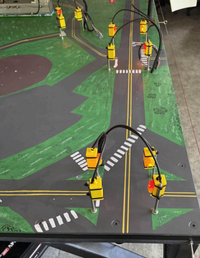

PRT Emulator
The PRT emulator is a modified conveyor system meant to closely model WVU's PRT system. it utilizes simulated stops and kick flaps to route cars and model real-life movement. The system uses Programable logic controllers (PLC's) to control how these cars are routed arcross the simulation. This gives students a chance to implement new control programs for testing before line implementation.

Smart Manufacturing Cell

The same conveyor system used for the PRT emulator can be modified to act as a mock manufacturing line. The system includes a robotic manufacturing arm that can be used for scanning, sorting, and palleting. This set up has been used as a tool to help teach students about timing, automation trade-offs, and throughput limits.
Multi-intersection Traffic Signal Network
The Traffic signal network designed in the lab is overdesigned on purpose, it was designed to more closely mimic the types of systems that students may interact witheveryday. Since real life deployments of these types of systems are often added on-to or adjusted on the fly, they can become complicated and over-engineered. The system has removed a focus on rigid timing structures, and focuses on adaptive control from AI guardrails. Due to the implementation of AI into the system, safe-guards are necessary to deal with "hallucinations" that may fabriacate traffic. System pipeline flows from data-collection, to data-proccessing, and finally to decision making, determining what color the light should be.

Power Generation and Management

The lab is home to a variety of clean generators including both wind turbines and solar panel banks. All of these feed energy into a battery-bank that manages the power and makes decisions on when that power is released. However, these generators do posses a substantial flaw, they cant be mounted to the roof. The labs solution is to attach much of this technology to a cart that they can roll outside when they want to collect data and run tests. For students this provides a great tool for learning wiring, management, and decision making on what does and doesnt deserve power when it becomes limited.